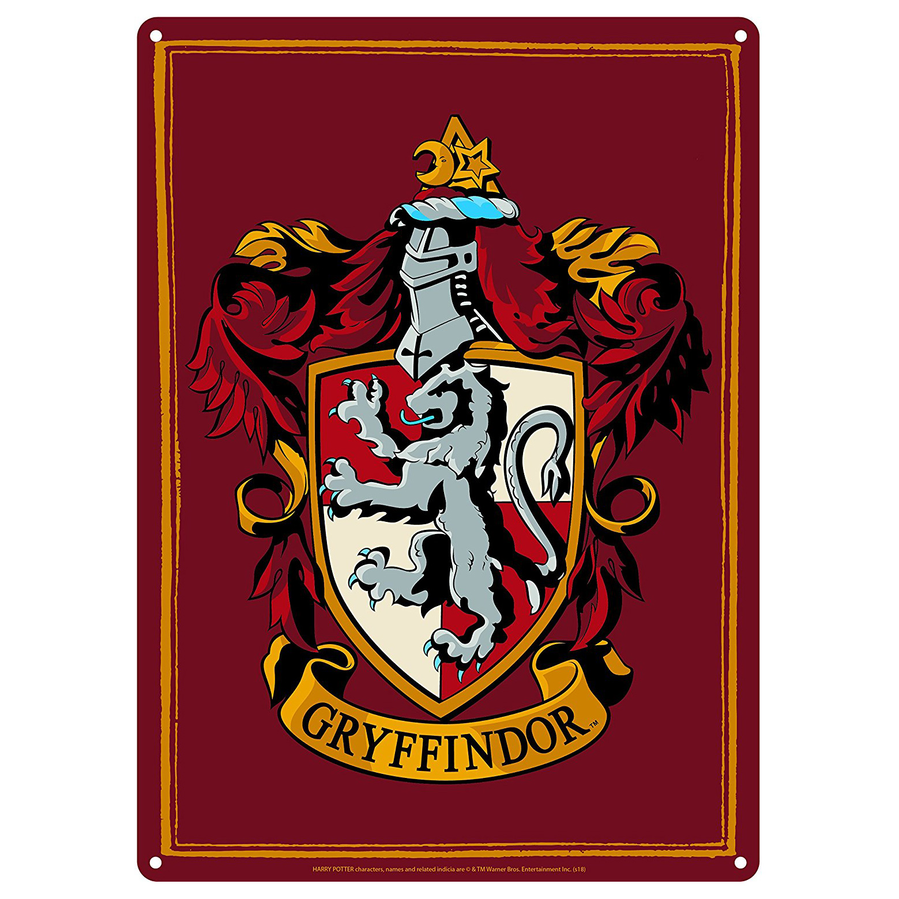

Gryffindor is one of the four Houses of Hogwarts School of Witchcraft and Wizardry, founded by Godric Gryffindor.Godric instructed the Sorting Hat to choose a few particular characteristics he most values. Such character traits of students Sorted into Gryffindor are courage, chivalry, and determination. The emblematic animal is a lion, and its colours are scarlet and gold. Sir Nicholas de Mimsy-Porpington, also known as "Nearly Headless Nick" is the house ghost.
Gryffindor corresponds roughly to the element of fire, and it is for that reason that the colours scarlet and gold were chosen to represent the House. The colour of fire corresponds to that of a lion as well, with scarlet representing the mane and tail and gold representing the coat.